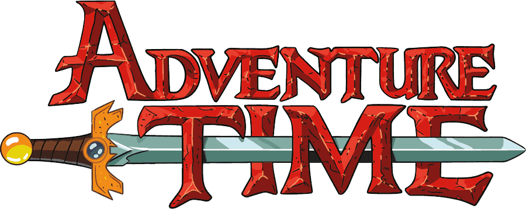

4월 13일 대개봉!
- 핀과 제이크의 모험은
- 늘 짜릿해!
- 늘 놀라워!
- 늘 끝내줘!
- ⓒCARTOON NETWORK
- 감독 Elizabeth Ito, Cole Sanche
- 전체 관람가
4월 13일 대개봉!


무시무시한 버섯 전쟁이 끝난 지 천 년 후. 마법이 돌아온 세상 ‘우랜드’의 유일한 인간 소년 ‘핀’과 생각하면 뭐든지 될 수 있는 마법 개 ‘제이크’는 평화를 지키는 영웅을 꿈꾸던 중 기억을 잃어버린 채 지하 통로에 살던 힘센 ‘수잔’을 만나게 된다.
어느 날, 알 수 없는 비행 물체가 ‘우랜드’를 습격해 친구들을 괴롭히기 시작하고 언제나 그렇듯 사건 현장에 출동한 ‘핀’과 친구들은 비행 생물체에서 ‘수잔’의 과거의 흔적을 발견하게 된다. 기억을 찾기 위해 떠나는 ‘수잔’을 위해! 어디선가 ‘나’를 기다릴 엄마, 아빠를 찾기 위해! ‘핀’도 함께 길을 나서게 되는데…
핀과 제이크의 모험은
늘 짜릿해!
늘 놀라워!
늘 끝내줘!